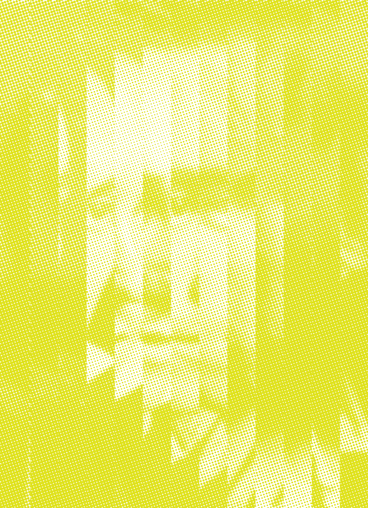

Approche Libre
Travaillez à partir des textes de Sénac, de son parcours, de son univers, de son époque ou des questions que son œuvre soulève aujourd’hui.
 Tarakomat
Tarakomat
La Chambre Claire × Tarakomat
Une édition collective en risographie pour célébrer l’œuvre, l’engagement et l’héritage du poète.

1926 — 2026
Jean
Sénac
Centenaire · appel à projets
Né le 29 novembre 1926 à Béni-Saf, Jean Sénac fut un poète profondément engagé dans la lutte pour l’indépendance de l’Algérie, et une voix singulière de la liberté, du corps et du désir.
Son œuvre et son parcours, traversés par les espoirs de la révolution, les contradictions de l’indépendance et l’expérience de la marginalisation, continuent d’interroger notre rapport à l’émancipation, à l’appartenance collective et à la liberté individuelle.
Défenseur de nouvelles voix poétiques algériennes, Sénac a également contribué à faire émerger une génération d’écrivains et de créateurs. Ce centenaire est l’occasion d’ouvrir un espace à de nouvelles expressions artistiques et intellectuelles.
Photographie, dessin, poésie, collage, illustration, écriture, bande dessinée, typographie ou archives réinterprétées… Toutes les formes de création imprimables en risographie sont les bienvenues. Format final : jusqu’au A3.
Travaillez à partir des textes de Sénac, de son parcours, de son univers, de son époque ou des questions que son œuvre soulève aujourd’hui.
L’utilisation de ses textes et de fragments de poèmes est possible, dans le respect des droits applicables.
Les publications seront imprimées par le studio Tarakomat, qui prendra entièrement en charge les frais d’impression.
Fanzine, journal, affiche, carte postale, édition de poésie ou toute autre forme imprimée. Un tiers du tirage est destiné à l’artiste.
Les candidatures se font uniquement par e-mail. Envoyez votre projet (existant ou conçu pour l’occasion), accompagné de quelques lignes expliquant son lien avec Jean Sénac, d’une courte biographie et de vos coordonnées.
Votre dossier doit comprendre :